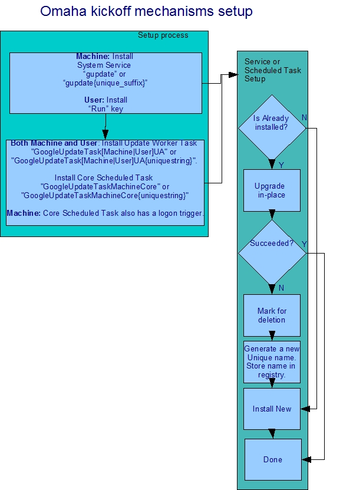
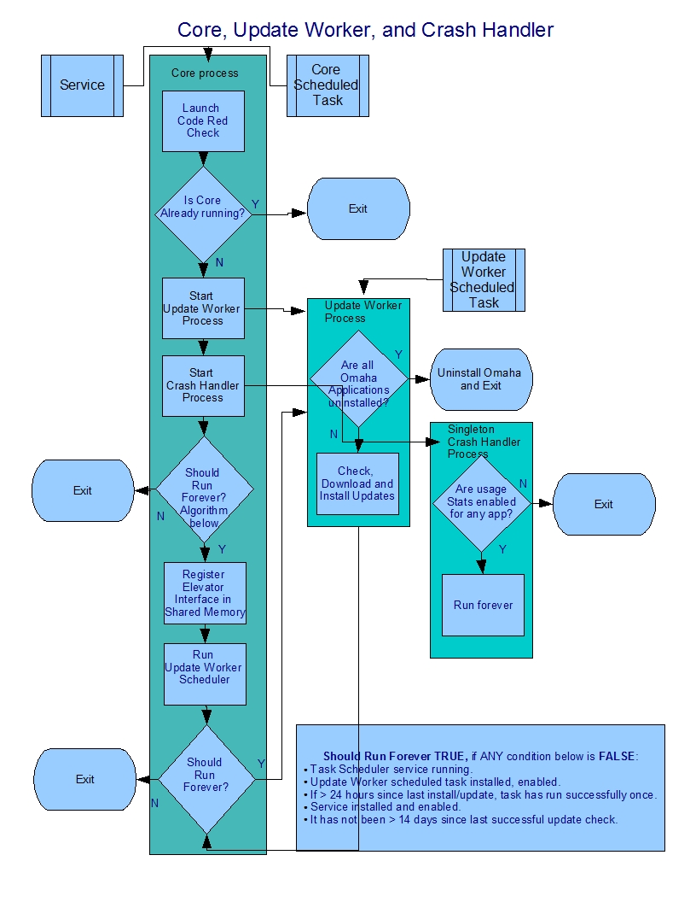

GoogleUpdate.exe on a Schedule Overview
Background
As mentioned in the release announcement, client software products have unique challenges, with one of the important challenges being keeping the product up to date. Deploying critical security fixes in a timely and effective manner is one key way that GoogleUpdate.exe, code name Omaha, helps keep users secure. Another benefit is that cool new features get deployed and adopted quickly.
Until now, Google Update would always run in the background, functioning primarily as a reliable scheduler performing update checks at periodic time intervals. The Google Update Core was primarily responsible for runnning the internal task scheduler. A secondary purpose of the Core was to handle crashes. The Google Update Update Worker did the actual update check, and updated any applications that had updates on the Omaha server.
Google Update now uses the Windows Task Scheduler to only run at periodic intervals. At the same time, the design is careful to ensure that automatic updates work just as reliably, and that users are just as safe and secure as before.
Requirements
The list of requirements includes:
-
Only run Google Update when needed and limit the amount of time it runs.
-
For handling crashes, GoogleCrashHandler.exe will be running and ready at the point where the Google application process starts. This is to allow for early crashes in an application to be caught. In addition, the application does not incur a startup delay waiting for the crash handler to start.
Design
A quick note on terminology: Google Update installs itself for the entire "Machine" when it is asked to install an application for all users. This is known as the "Machine instance" or the "Machine Case". In cases where Google Update installs a per-user application and itself as "User", this is known as the "User instance" or the "User case".
With the new design, the Google Update Core, as well as the Update Worker, will primarily run as tasks scheduled by the Windows Task Scheduler.
The Core scheduled task will have a trigger to run at logon only for the machine case, and a trigger to run at daily intervals for both user and machine.
The Update Worker task will be installed for both the user and machine cases. It will run at a fixed interval of one hour.
The existing mechanisms to launch the Core using the System Service for machine and the Run key for user are also being retained in case the Task Scheduler does not work as intended.


When the Core runs, it will do the following:
- Do a Code Red check. This works like it worked before the architectural changes.
- Exit if there is another instance of the Core running.
- Check if all Omaha-supported applications have uninstalled, and if so, will start an uninstall Update worker. The Update worker will then uninstall Omaha. The Core will exit at this point and not do further processing.
Only when the Core or the Update Worker run will the uninstall check be performed. Omaha will not be actively monitoring the Clients key, to see if Omaha-supported applications have uninstalled.
- If Omaha does not need uninstalling, start a plain-vanilla Update worker. The update worker will check if it needs to do an update check, and if not, shut down immediately. Update check intervals for Omaha are now configurable, as are update policies per Omaha application, using Group Policy. For more information, please refer to Omaha Group Policy Support.
- Start a Crash Handler worker, GoogleCrashHandler.exe. The crash handler worker will check if usagestats are enabled for any application that Omaha supports, and if not, shut down immediately. For per-machine installs (HKLM), Omaha will also check ClientStateMedium in addition to ClientState, where the application can write the usagestats value. Like the existing ClientState key, there will be a subkey for each application.
If usagestats are enabled, the GoogleCrashHandler.exe will run all the time, and handle crashes. When a crash occurs, GoogleCrashHandler.exe will spawn an instance of the GoogleUpdate.exe constant shell to upload the crash.
- The Core will exit at this point, if the following are all true:
- the Task Scheduler is running.
- the Update Worker scheduled task is installed, not disabled, and, if it has been more than 24 hours since the last install/update of Omaha, the task has run successfully in the past.
- the Service is installed and enabled.
- It has not been greater than 14 days since Omaha last successfully checked for updates.
- If any of the above conditions are not true, the Core will run the internal scheduler, which runs the Update Worker. In other words, the Core will continue to run.
- In this new architecture, the Google Update Service now supports the Elevator interface. If the Service is not installed for some reason, the Core will continue to run, in order to support the Elevator interface.
When the Update Worker runs it will do the following:
- Check whether to uninstall Omaha and uninstall Omaha if needed.
- Behave as before, in that it will check for and install updates to Omaha and applications.
Some notable changes:
- The idle trigger is being eliminated for the scheduled tasks, because it offers limited robustness benefits, and has issues with the Core running too frequently.
- There will now be two scheduled tasks installed for Omaha, one for the Core, and another for the Update Worker.
- The Core scheduled task will have two triggers for machine, and one for user: The common trigger will run the Core task once every 24 hours. The additional trigger for machine will run the task at logon; this is a secondary kickoff mechanism for the machine case. Windows does not allow a "run only when logged on" task to have a logon trigger, hence Omaha does not have that trigger for the user case.
- The Core task will have the default name of "GoogleUpdateTask[User|Machine]Core", or if that name is already taken, a name of the form "GoogleUpdateTask[User|Machine]{uniquestring}Core".
- If the Core task name is not the default name, the unique name will be stored in the "Google\Update" registry under the "gupdate_task_name_c" named value.
- The Update Worker task will have one trigger: run at fixed intervals of approximately one hour.
- The Update Worker task will have the default name of "GoogleUpdateTask[User|Machine]UA", or if that name already exists, a name of the form "GoogleUpdateTask[User|Machine]{uniquestring}UA".
- If the Update Worker task name is not the default name, the unique name will be stored in the "Google\Update" registry under the "gupdate_task_name_ua" named value.
- When the Core runs, it will check for existence of the UA scheduled task. It does not care if the Core task is installed or not. If the UA task is not installed, the Core will run continously.
Addressing issues with using the Windows Task Scheduler
- Credentials is an issue when creating a user task. The scheduler caches credentials for the user that registered the scheduled task and if the user password changes, then the task does not work anymore. This issue was worked around by creating a task that is launched only when the user is logged on, which does not have the credential caching issue.
- There are cases where the scheduled task cannot be installed for some reason. For instance, a non-admin user on Windows Server 2003 does not have permissions to install scheduled tasks. This issue is addressed by the fallback mechanism to run the Core all the time.
- If the machine is in a sleep state, there are some hardware configurations on which the scheduled task will not be scheduled. There are some reported hardware configurations on which the scheduled taks fail because of suspected ACPI interactions. These issues are addressed by the fallback mechanism to run the Core all the time in cases where Google Update detects that either the scheduled task has not run for a while or that it terminated with an error.
- If the task fails for some reason, on certain Windows systems, a message is displayed to the user. There have also been reports of the Task Scheduler service failing in some cases. To address this issue, we are careful not to return any error to the Task Scheduler from the scheduled task process.